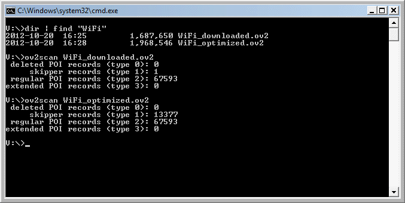

This is a little command-line utility that counts the different types of records in an OV2 file. I wrote it so you can easily check if the OV2 files you've downloaded or created have more than one "skipper record". Third-party OV2 files with more than 20 POI records and only one skipper record (or any third-party OV2 file with no skipper records at all) should be run through ov2optimizer.

ov2scan is available in several different formats:
| Format | Download |
|---|---|
| Windows command-line executable (standalone 32-bit .exe) | ov2scan.exe.1.0.0.zip (47 KB, 2012-10-21) |
| VBScript for Windows (.vbs) | ov2scan.vbs.1.0.0.zip (1 KB, 2014-09-07) |
| Perl script for Mac and Linux (.pl) | ov2scan.pl.1.0.0.zip (1 KB, 2012-10-21) |